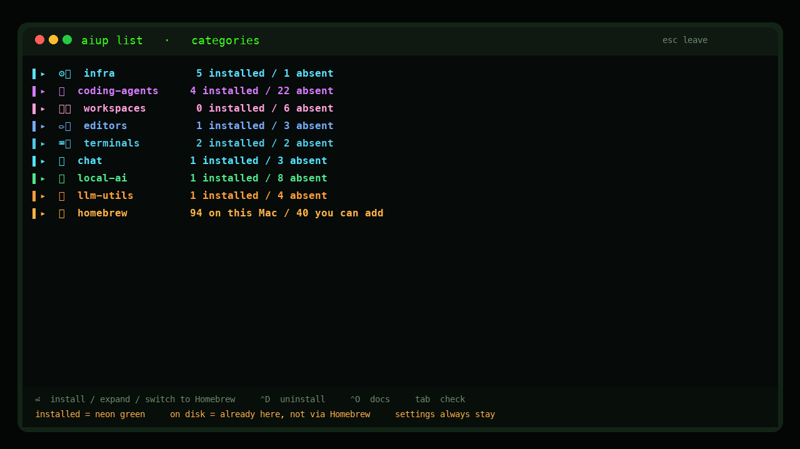
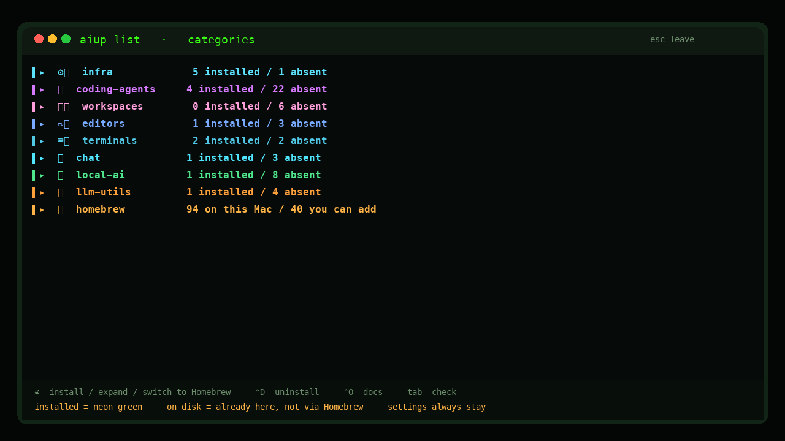
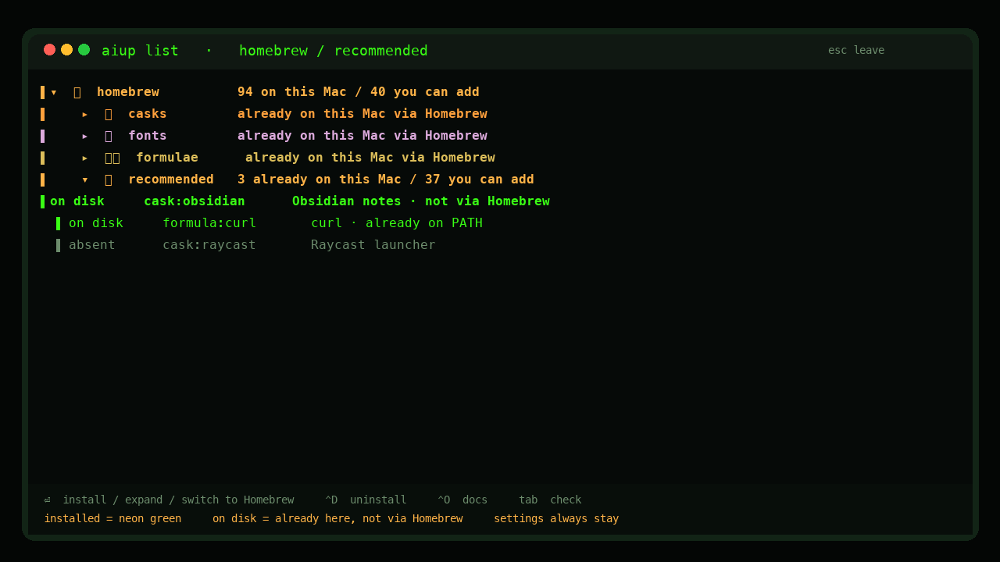
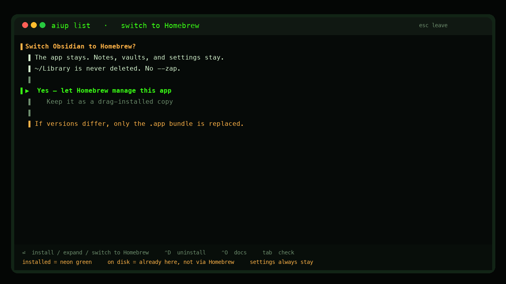

macOS · local · MIT
aiup scans PATH, app bundles, and Homebrew. It updates what is present. Missing tools stay missing until you ask. Nothing is uploaded.

Running aiup updates installed tools only. Uninstalls stay uninstalled.
Installs go under your home directory. Node CLIs use ~/.local/share/aiup/npm, not a root-owned global.
Child lists show what brew already put on this Mac, plus a short recommended set. An app you installed some other way shows as on disk — not missing.
Enter on an on-disk app lets Homebrew manage it. Notes, vaults, and ~/Library are left alone. Never --zap.



| enter | Expand a category, install or update, or switch an on-disk app to Homebrew |
|---|---|
| tab | Check or uncheck |
| ctrld | Uninstall |
| ctrlo | Open docs |
| esc | Leave |
mkdir -p ~/.local/bin
curl -fsSL https://raw.githubusercontent.com/travisjneuman/aiup/main/macos/aiup -o ~/.local/bin/aiup
chmod +x ~/.local/bin/aiup
export PATH="$HOME/.local/bin:$PATH"
aiup listNeeds bash, python3, and curl. fzf makes the list full-screen; numbered prompts work without it. Homebrew, Node, and uv install on demand.
Read from the same script that runs on your Mac. When the catalog grows, this list grows with it.